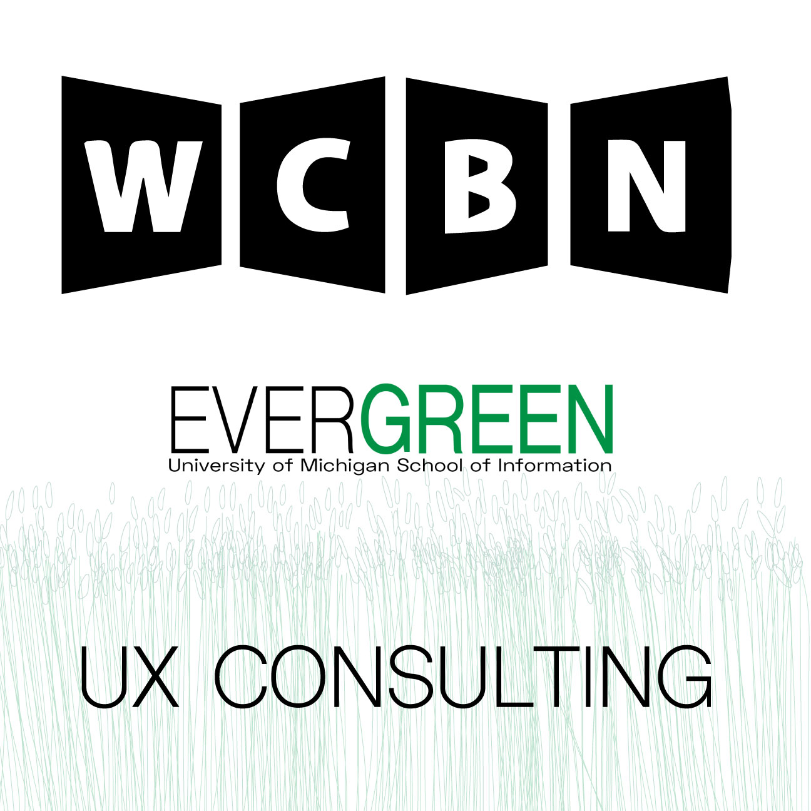
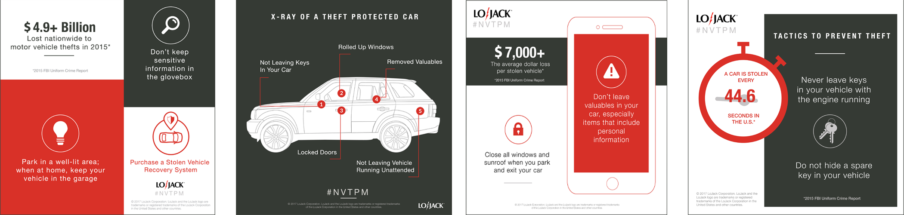
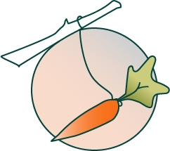

Skip to content
Kara Dailey
About
Projects
Resume
Gallery
This is my project page where all of my previous work exists.
If you want to learn more, scroll around and explore.
Thanks!
WCBN UX Training Consulting

WCBN is a 'free-form' independent radio station in Ann Arbor Michigan. My consulting group and I were tasked with improving one of their main Training Processes.
We collected data through contextual inquiry with stakeholders, observation of work practices and information system usage, as well as examination of training artifacts We synthesized and analyzed the qualitative data to produce a formal report in which we presented our recommendations for future action at the station.
My main role was in conducting hours of user interviews along with building the HUGE storyboard made of 349 post-its that helped us group and probe upon our data.
See the Case Study

User Content Marketing at LoJack
During my internship with LoJack Corporation in 2017, I had the opportunity to wear many hats. I had hats in *breathe in* design, data collection/analysis, marketing, planning, event organization and user research. *breathe out* 😅
If you're interested in seeing a select number of projects that I completed, below is a link to my old portfolio where it's housed.
See my LoJack Work
Incentivize - The Motivation Support Network

We humans crave human connection and sometimes everyday tasks and work can get in the way of what we want. This sad reality is a problem, and Incentivize is a solution. Incentivize in it's current state is a culmination of 3 months of low-mid-high fidelity iterations, user testing, competitive analysis, sketching, storyboarding and persona research within student populations.
To read my project report that shows my creative processes and methodologies, please click on the button below! To view a walkthrough of the app, click on the title of this section.
See my Project Summary
User Testing - Ft. Myers, FL Website Redesign
In the Fall of 2018, I was accepted into a lab that centers on improving citizen interaction through design.
We applied to a website re-design project thinking we would be doing an aspect of the re-design, but ultimately we learned that the re-design was to be done by an outside company called Civic Plus and we had no control over the aesthetics of the website. Because of these constraints, we focused on the Information Architecture of their main pain point - the main Navigation Bar.
We used three qualitative research methods, Heuristic Evalations, Task Scenarios, and Open Card Sorting. See the link for an overview of our process.
User Testing Process Overview